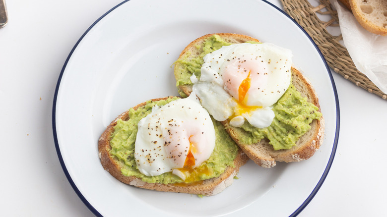

Avocado Toast

This is Avocado Toast but with eggs and honey as well.
Calories: 525 - 575
Ingredients:
- Bread (2 slices)
- Avocado (1 whole)
- Eggs (2)
- Butter
- Salt
- Pepper
- Honey
Instructions:
-
Place butter in a pan and heat it. Move the pan around so that the melted butter coats the entire surface. This helps prevent the eggs from sticking. (Disclaimer: They can still stick to your pan)
-
Once the pan is coated with melted butter, crack the eggs into the pan separately, keeping the yolks intact. Let the eggs cook.
-
Toast the bread slices, but remove them so that they are slightly toasted with a bit of crunch.
-
Cut the avocado in half and spread half of the avocado on each slice of bread.
-
By now, the eggs should be ready to flip. If they don't move easily, let them cook a bit longer. When ready, use a spatula to separate the egg whites if they've joined forces, then flip them.
-
Let the eggs cook for just under a minute. Once done, place them on top of the avocado-coated bread slices.
-
Add salt, pepper, and honey. Or don't.
-
You are done.